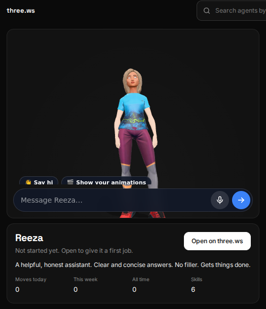
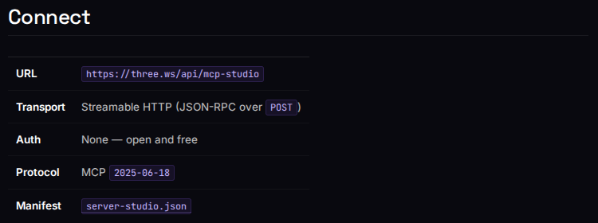

Microsoft technology in production
Running for real users today, under each project's own license.
- Microsoft Marketplace live
Publisher listing at marketplace.microsoft.com. Same platform as three.ws; nothing forks for the channel. - TRELLIS, Microsoft Research (MIT) live
Self-hosted image-to-3D on NVIDIA L4 GPUs in Google Cloud. 35,531 jobs since 8 July 2026; 30-day median 234 s at standard quality. TRELLIS.2 worker deployed, not yet serving. - ONNX Runtime Web live
Wake word, voice activity detection and transcription run in the visitor's browser, so listening never streams a room to a server. - Adaptive Cards 1.6 live
One agent card layout for chat hosts and the Windows widgets board.


Built for Microsoft surfaces
In the open-source repo, validated by automated checks, each awaiting its publication step.
- App package for Teams and Microsoft 365 ready
Two personal tabs, a search message extension with Adaptive Card results, and an agent connector to the 16-tool MCP server. Manifest schema v1.30; package checks pass. - MCP server for Copilot Studio and Foundry ready
Streamable HTTP endpoint any MCP client can add today; certification package drafted. - Power Platform connector ready
Five actions for Power Automate, Power Apps, Logic Apps and Copilot Studio, OAuth with PKCE, four flow templates. - Microsoft 365 Copilot connector ready
Indexes an account's agents, models and avatars into the customer's tenant through Microsoft Graph, with per-audience ACLs. - Marketplace SaaS offer ready
Microsoft Entra sign-in, SaaS Fulfillment v2 and hourly metered billing, so a Marketplace purchase grants the same plan as a card. - Microsoft Store and Edge Add-ons ready
The installable web app packaged as MSIX, and the browser extension.